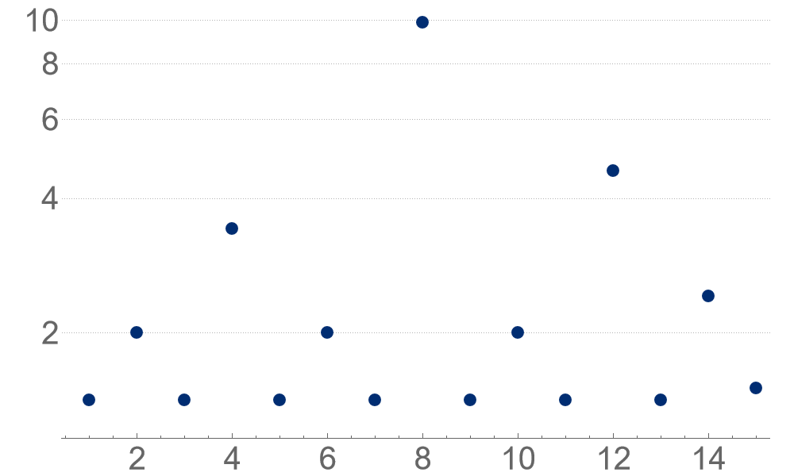
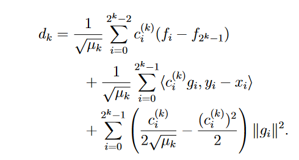
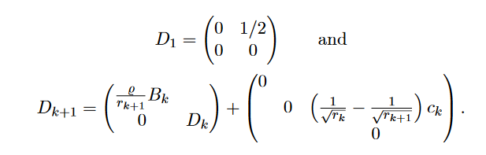
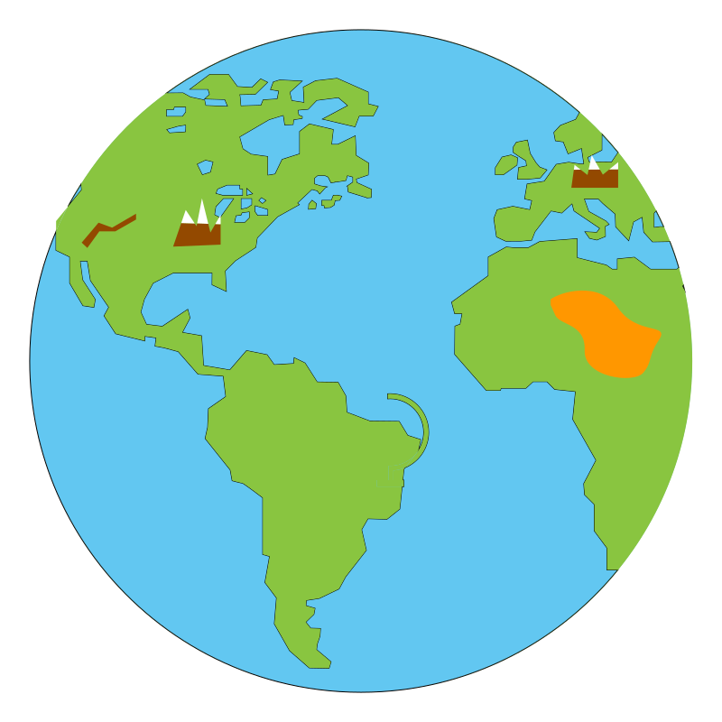

Kevin Shu
Given a smooth convex function \(f\), we want to find the minimum of \(f\) using first order queries.
The classic way to do this is to use gradient descent: starting at some point $x_0$, we iterate \[ x_{k+1} = x_k - \eta_k \nabla f(x_k), \]
Using $\eta_k = 1$ for each $k$ leads to a convergence rate of $O(1/T)$.
The best asymptotic rate comes from Nesterov acceleration, which has a convergence rate of \(O(1/T^2)\), but does not have this gradient descent form.
Can we do better than $O(1/T)$ just by changing the step sizes in gradient descent?
Yes!
Steep hill
Big steps - Divergence
Shallow hill
Short steps - Slow convergence
Alternating between big steps and long steps leads to faster convergence.
There is a sequence of step sizes achieving a rate of convergence of $O(1/T^{1.01})$.
There is a sequence of step sizes achieving a rate of convergence of $O(1/T^{1.27})$.
There is a sequence of step sizes achieving a rate of convergence of $O(1/T^{1.27})$ (with slightly better constants).
There is a sequence of step sizes achieving a rate of convergence of $O(1/T^{1.27})$.
All of these sequences involve the silver ratio \(\rho = 1+\sqrt{2}\) and roughly have the form \(\eta_k = \rho^{\nu(k)}\), where \(\nu(i)\) is the largest power of 2 dividing \(i\).
We want to prove a specific bound of the following form:
If $x_i$ is the $i^{th}$ iterate of this procedure, and $x_*$ is the minimizer, then
where $r_k \le (1+\sqrt{2})^{-k}$, and $y \in \R^n$, and $Q$ is a positive semidefinite quadratic form in the problem variables.
Smooth convex functions satisfy the following inequalities for any $x, y \in \R^n$. \[ f(x) - f(y) \ge \langle \nabla f(y), x - y\rangle + \frac{1}{2L} \|\nabla f(x) - \nabla f(y)\|^2. \]
If we denote by $g_i = \nabla f(x_i)$, then this inequality can be written \[ f(x_j) - f(x_i) \ge q_{ij}(g_1, \dots, g_n), \] where $q_{ij}$ is a quadratic form.
If we denote by $g_i = \nabla f(x_i)$, then this inequality can be written \[ f(x_j) - f(x_i) \ge q_{ij}(g_1, \dots, g_n), \] where $q_{ij}$ is a quadratic form.
By taking nonnegative combinations of these inequalities, we can get new inequalities. This is called the performance estimation problem (Drori and Teboulle).
We found a specific nonnegative combination of these defining inequalities to prove this result.
We found a specific nonnegative combination of these defining inequalities to prove this result.
Imagine you're an astronaut who is floating in space, and you can see the earth below you.
You can also see some landmarks. You want to determine how you are oriented in space based on a globe.
Given $\{u_i\}_{i=1}^n, \{v_i\}_{i=1}^n \in \R^3$, find \[ \min_{U \in \text{SO}(3)} \sum_{i=1}^n \|U v_i - u_i\|^2, \] where $\text{SO}(3)$ is the set of $3 \times 3$ rotation matrices.
We think of the $u_i$ as being the reference points and the $v_i$ as being the landmarks.
\[ \min_{U \in \text{SO}(3)} \langle V, U \rangle, \] where \(V = -\sum_{i} u_i v_i^{\intercal}.\) This can be solved using SVDs.
Given \(A, B \in \R^{n \times n}\), find
\[ \min_{U \in \text{SO}(n)} \langle A, U \rangle \] \[ \text{s.t. } \langle B, U \rangle \ge c \]
A constraint might appear if the astronaut already has some initial estimate of their orientation. The constraint reduces symmetry and means that a direct solution using SVDs is not possible.
Given \(A, B \in \R^{n \times n}\), find
\[ \begin{align} \min &\qquad x\\ \text{s.t. }&\qquad y \ge c\\ &\qquad(x,y) \in \{\langle A, U\rangle, \langle B, U\rangle : U \in \text{SO}(n)\}. \end{align} \]
For any \(A, B \in \mathbb{R}^{n\times n}\), \(\{\langle A, U\rangle, \langle B, U\rangle : U \in \text{SO}(n)\}\) is convex. 1,2
This leads to an \(\epsilon\) approximation algorithm for the constrained Wahba's problem in \(O(n^3 \log(\frac{1}{\epsilon}))\) time.
If $Q_1, Q_2 : \R^{n} \rightarrow \R$ are quadratic forms, then $\{(Q_1(x), Q_2(x)) : \|x\|_2 = 1\}$ is convex (Brickman's theorem)
Let $Y$ be the convex hull of $f(X)$, where $X$ is a topological space.
If there is a continuous such lift $\phi$, we say $f$ is continuously maximized.
The map $\phi$ defines an element of the homotopy group $\pi_{n-1}(X)$.
If $\pi_{n-1}(X) = 0^*$, then continuous maximization implies convexity.
Assume $T$ is generic, then Von Neumann-Wigner implies that the image $T^{\intercal}$ has no matrices with a repeated singular value.
This implies that the singular vectors of matrices in the image of $T^{\intercal}$ are continuous except at the origin. In our context, this implies that $T$ is continuously maximized.
$\pi_1(\SO(n)) = \Z / 2 \Z$. This is enough for $T(\SO(n))$ to be convex.
A linear map \(T : \R^{n \times n} \rightarrow \R^k \) is singularly noncrossing if every nonzero matrix in the image of \(T^{\intercal}\) has nondegenerate singular values.
If \(T\) is singularly noncrossing and \(\text{SO}(n)\) satisfies certain topological properties concerning its homotopy groups, then \(T(\text{SO}(n))\) is convex.
Noncrossing maps are closely related to representations of Clifford algebras.
Von Neumann-Wigner says that generic 2 dimensional subspaces are noncrossing
Fact: If $X$ is a PSD matrix, then every principal submatrix of $X$ is PSD.
If $X$ has the property that all of the $k \times k$ principal submatrices of $X$ are PSD, how far can $X$ be from being PSD?
Formally, we let $S^{n,k}$ be the set of $n\times n$ matrices where all of the $k \times k$ principal submatrices are PSD.
We want to find
\[ \min \{\lambda_{min}(X) : X \in S^{n,k},\; \tr(X)=1\}. \]The dual to \(S^{n,k}\) is the factor width \(k\) cone, which can be used to describe sparse quadratic programs like sparse regression and sparse PCA. \[ (S^{n,k})^* = \{X \text{ symmetric} : X = \sum v_i v_i^{\intercal}\text{ where }\|v_i\|_0 \le k\} \]
Sparse regression and sparse PCA can be expressed as conic optimization problems over \(S^{n,k}\).
That is, they are of the form
Observation: If $X \in S^{n,k}$, then for any $\ell \le k$, \[ c^{n,\ell}(X) = \sum_{\substack{S \subseteq [n] \\ |S| = \ell}} \det(X|_S) \ge 0. \]
The characteristic polynomial of $X$ is \[ \det(X - tI) = \sum_{\ell=0}^n (-1)^{\ell} c^{n,n-\ell}(X) t^{\ell}. \]
This means that if $X \in S^{n,k}$, then the first $k$ coefficients of the characteristic polynomial of $X$ alternate in sign. The set of symmetric matrices with this property is convex!
This set is called the hyperbolicity cone of the polynomial $c^{n,k}$.
For any \(X \in S^{n,k}, \lambda_{\min}(X) \ge \frac{k-n}{n(k-1)}\text{tr}(X)\), and this inequality is met with equality for every \(n\) and \(k\).
A polynomial \(f(x)\) is hyperbolic with respect to \(v \in \mathbb{R}^n\) if for every \(x \in \mathbb{R}^n\), \( g_x(t) = f(x + tv) \) has only real roots.
An important example comes from the determinant of a symmetric matrix, which is hyperbolic with respect to the identity matrix by the spectral theorem.
Hyperbolic polynomials have associated hyperbolicity cones: \[ \Lambda(f, v) = \{x \in \mathbb{R}^n : f(x+tv) > 0 \text{ for }t > 0\}. \] These are convex cones associated to the polynomial that generalize the positive semidefinite cone.
The \(k^{th}\) Renegar derivative of the PSD cone is given by \(\Lambda(c_{n-k}, I),\) where \(c_k\) is the chararacteristic coefficient defined by \[c_{n-k}(X) = D_I^{k} \det(X).\]
These are nice basis invariant convex cones of matrices, which are larger than the PSD cone. When \(k = n -2\), this is the second order cone.
\(S^{n,k}\) is related to the Renegar derivatives because \[S^{n,k} \subseteq \Lambda(c_{n-k}, I).\]
This leads to some natural theorems about the matrices in \(S^{n,k}\):
For any \(X \in S^{n,k}, \lambda_{\min}(X) \ge \frac{k-n}{n(k-1)}\text{tr}(X)\), and this inequality is met with equality for every \(n\) and \(k\).
I have explored a number of other questions along these lines: